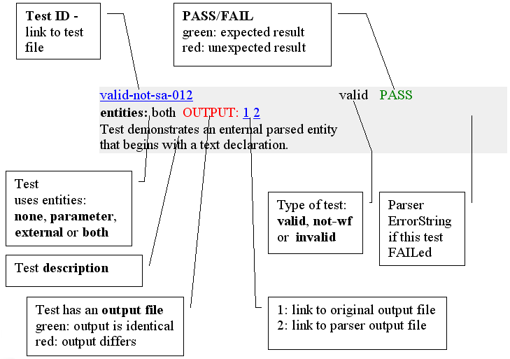

Send mail, suggestions and bug reports to

Last modified: 17.02.2005 16:20
Here are the results of running OASIS XML testsuite. Results of some Parsifal specific tests and issues can be found Here.
XMLconf test results for validating mode are here and Parsifal specific tests are here. Note that validation support and testing is currently work in progress although already very stable and all tests are passed w/o any memory leaks.
Tests prove several things about the parser:
There are some things you should consider when checking the results though:
New: XMLDiff diffgram is generated when test output differs. There is diff link to diffgram file following output links.
Description of the result format:
|  |
Samples directory contains XMLTEST project with README which describes details on running the testsuite or any tests in XMLCONF format.
Copyright © 2002-2005 Toni
Uusitalo.
Send mail, suggestions and bug reports to
Last modified: 17.02.2005 16:20